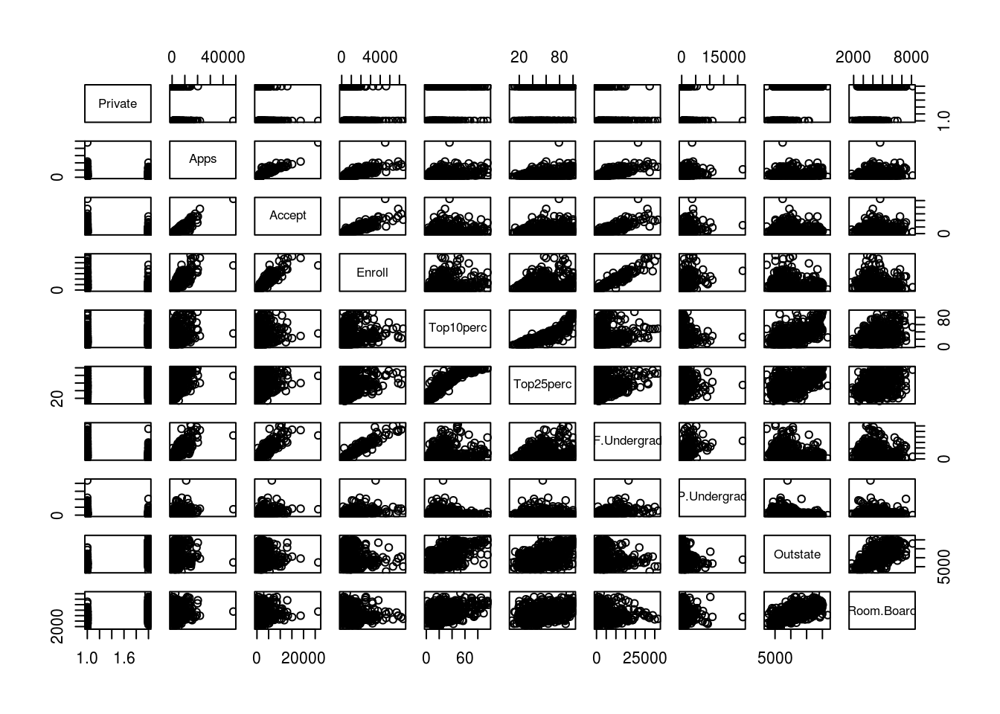
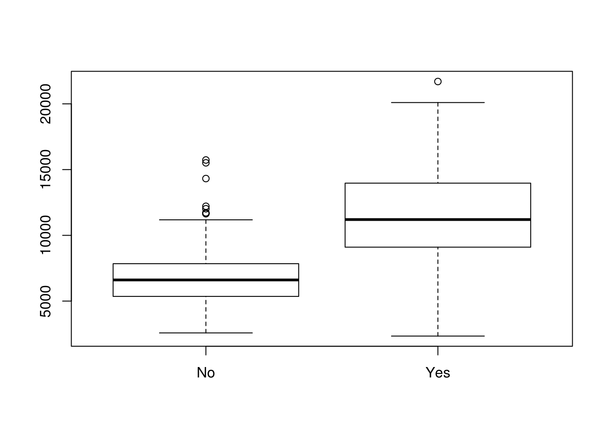
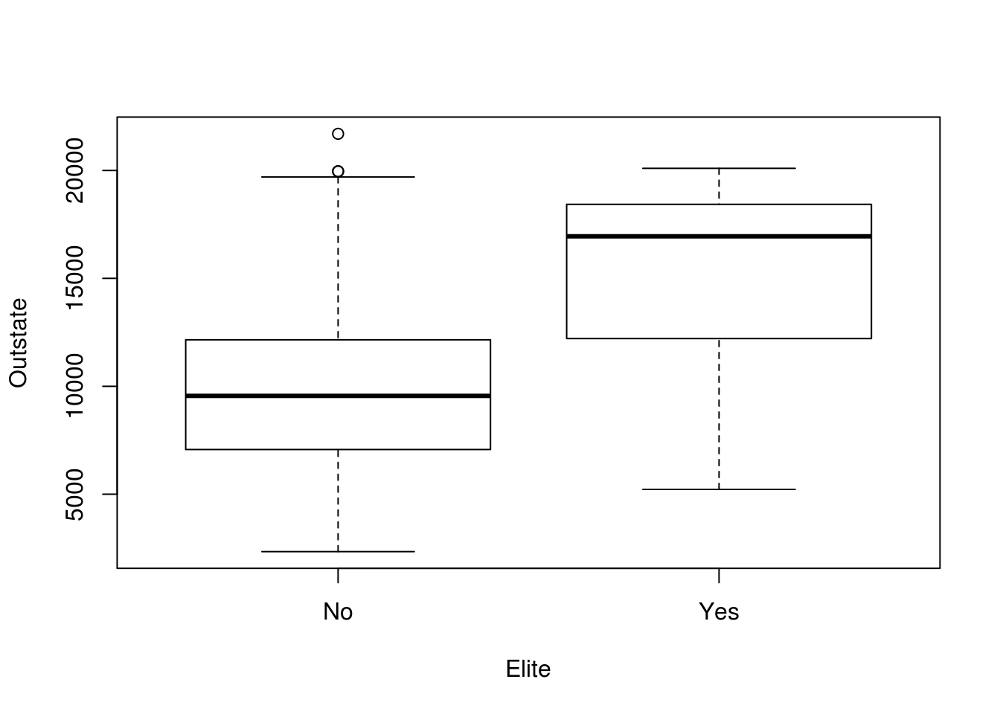
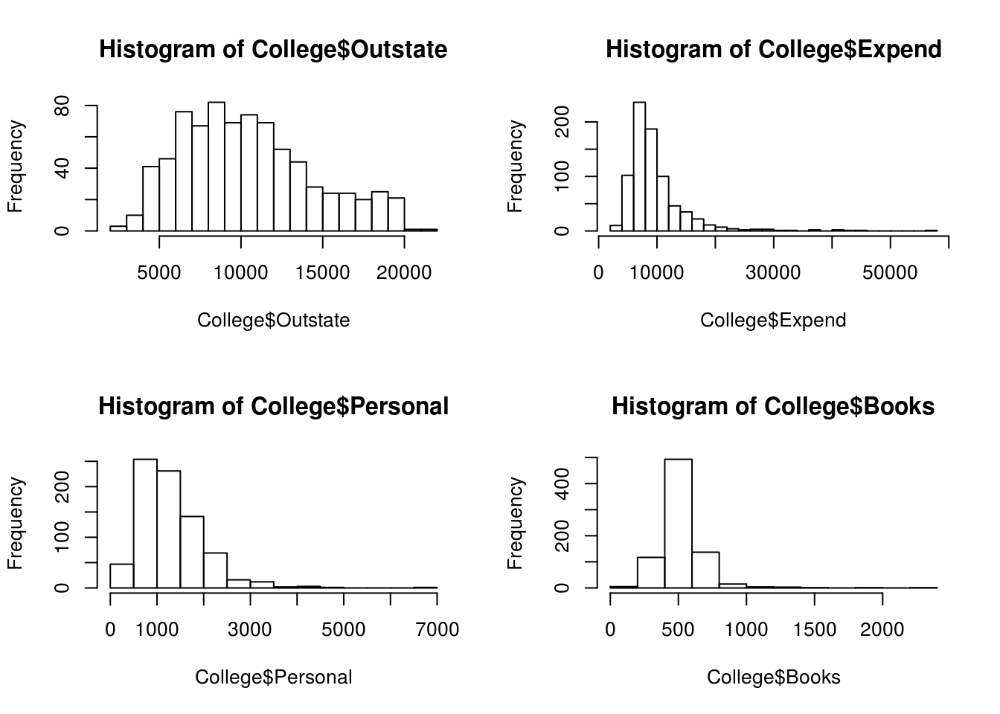
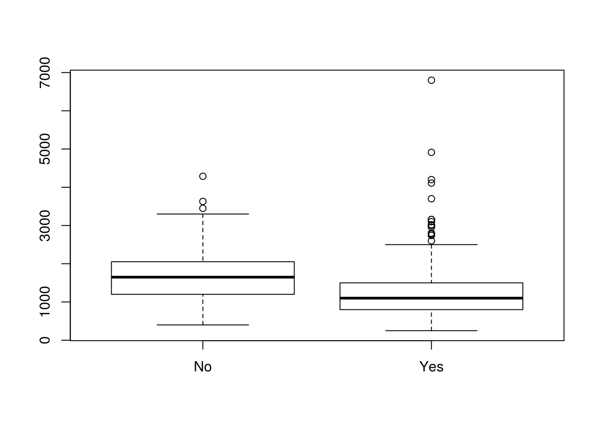
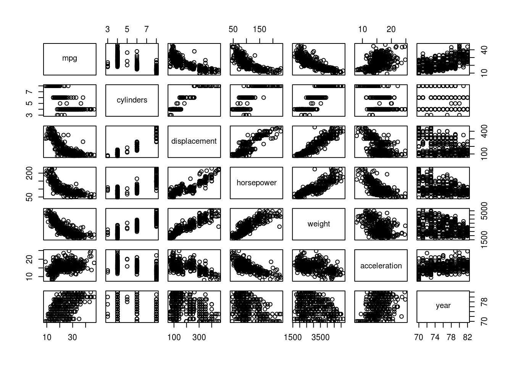

Chapter 2 Statistical Learning
- In the case of large \(n\), small \(p\), it would be best to use a complex learning method. Since there are only a few \(p\) relative to the number of observations, the flexible method should be able to accurately capture the true \(f\) without the complexity of the flexible model becoming out of control.
- In the case of small \(n\), large \(p\), it would be worse to use a flexible model. Flexible models require a large number of observations or we start fitting to the noise too much. In addition, our problem may even be underdetermined.
- If the relationship between \(X\) and \(Y\) is highly non-linear, we would expect flexible methods to be better. Flexible methods can fit to arbitrary \(f\) much better.
- If \(Var(\epsilon)\) is extremely high, a flexible model would be worse. This is because the flexible model will start fitting to the high variance whereas the rigid model will be more robust in ignoring the variance.
- Regression problem. CEO salary should be treated like a continuous response to the other factors. This is an inference problem since we are trying to understand how the factors interact with the response rather than simply predicting CEO salaries. \(n=500\) and \(p=3\) (profit, number of employees, and industry).
- Classification problem. The output is qualitative, success or failure. We are interested in prediction since we only care to guess whether our product will succeed. \(n=20\), \(p=13\) (price charged, marketing budget, competition price, and 10 others). As further justification that we are interested in prediction, the interplay between the variables and the outcome of the product will probably be highly non-linear resulting in using flexible models with uninterpretable results.
- Regression problem. The % change is quantitative. This is most likely a prediction problem since one imagines we are trying to beat the market, so the goal of the algorithm may be to find strange patterns to boost the prediction results (similar to PCA). \(n=52\) (weekly data), \(p=3\).
Skipping this for now.
Pass.
Flexible models are able to capture a much wider range of \(f\)’s. They however, come at the cost of needing more training data in proportion to the observed response variables. In addition, their results may be hard to interpret. A more flexible approach may be appropriate when given a large \(n\) (see #2, a.), when the relationship between \(X\) and \(Y\) is not obvious. A less flexible approach is preferred if we have a small \(n\), interpretation is the goal, or when the possible shapes of \(f\) is limited and understood.
A parametric approach has parameters that control the model in an fixed way. These may be coefficients of a line, parameters for parametrized distrubtions, or even statistics of central tendency. Non-parametric approaches general try to estimate the shape of \(f\) directly from the data, like using nearest neighbors to guess \(Y\). A parametric approach allows one to understand the interaction between the \(X\) and the \(Y\). For example, if we have the coefficient of some \(X_i\), say \(\beta_i\), then we can figure out how changing \(X_i\) might change \(Y\). Parametric models also require less data. However, if we get the model assumptions wrong, then parametric approaches can give poor results.
- We’ll write some code to do this for us.
d<-data.frame(Obs=c(1,2,3,4,5,6), X_1=c(0,2,0,0,-1,1), X_2=c(3,0,1,1,0,1), X_3=c(0,0,3,2,1,1), Y=c("Red","Red","Red","Green","Green","Red") ) d$Dist=apply(cbind(d$X_1,d$X_2,d$X_3), 1, function(x) sqrt(sum(x^2))) d## Obs X_1 X_2 X_3 Y Dist ## 1 1 0 3 0 Red 3.000000 ## 2 2 2 0 0 Red 2.000000 ## 3 3 0 1 3 Red 3.162278 ## 4 4 0 1 2 Green 2.236068 ## 5 5 -1 0 1 Green 1.414214 ## 6 6 1 1 1 Red 1.732051- Our neighbor closest to the origin is observation 5, so we would predict Green.
- The three closest neighbors are 5,6, and 2 which are Green, Red, Red respectively. We would predict Red since there are more Red observations than Green observations.
- We would expect it the best \(K\) to be small. The reason is that the higher the \(K\) is, the more far away points we bring in. Over longer distances, the Bayes decision boundary can change a lot.
- This may be cheating, but I would rather just read in with the data function.
data("College",package="ISLR") head(College)## Private Apps Accept Enroll Top10perc ## Abilene Christian University Yes 1660 1232 721 23 ## Adelphi University Yes 2186 1924 512 16 ## Adrian College Yes 1428 1097 336 22 ## Agnes Scott College Yes 417 349 137 60 ## Alaska Pacific University Yes 193 146 55 16 ## Albertson College Yes 587 479 158 38 ## Top25perc F.Undergrad P.Undergrad Outstate ## Abilene Christian University 52 2885 537 7440 ## Adelphi University 29 2683 1227 12280 ## Adrian College 50 1036 99 11250 ## Agnes Scott College 89 510 63 12960 ## Alaska Pacific University 44 249 869 7560 ## Albertson College 62 678 41 13500 ## Room.Board Books Personal PhD Terminal ## Abilene Christian University 3300 450 2200 70 78 ## Adelphi University 6450 750 1500 29 30 ## Adrian College 3750 400 1165 53 66 ## Agnes Scott College 5450 450 875 92 97 ## Alaska Pacific University 4120 800 1500 76 72 ## Albertson College 3335 500 675 67 73 ## S.F.Ratio perc.alumni Expend Grad.Rate ## Abilene Christian University 18.1 12 7041 60 ## Adelphi University 12.2 16 10527 56 ## Adrian College 12.9 30 8735 54 ## Agnes Scott College 7.7 37 19016 59 ## Alaska Pacific University 11.9 2 10922 15 ## Albertson College 9.4 11 9727 55#rownames(College)=College[,1] #This is already done in the package data set. head(College) #note that this pops up a little window, so you may want to run this## Private Apps Accept Enroll Top10perc ## Abilene Christian University Yes 1660 1232 721 23 ## Adelphi University Yes 2186 1924 512 16 ## Adrian College Yes 1428 1097 336 22 ## Agnes Scott College Yes 417 349 137 60 ## Alaska Pacific University Yes 193 146 55 16 ## Albertson College Yes 587 479 158 38 ## Top25perc F.Undergrad P.Undergrad Outstate ## Abilene Christian University 52 2885 537 7440 ## Adelphi University 29 2683 1227 12280 ## Adrian College 50 1036 99 11250 ## Agnes Scott College 89 510 63 12960 ## Alaska Pacific University 44 249 869 7560 ## Albertson College 62 678 41 13500 ## Room.Board Books Personal PhD Terminal ## Abilene Christian University 3300 450 2200 70 78 ## Adelphi University 6450 750 1500 29 30 ## Adrian College 3750 400 1165 53 66 ## Agnes Scott College 5450 450 875 92 97 ## Alaska Pacific University 4120 800 1500 76 72 ## Albertson College 3335 500 675 67 73 ## S.F.Ratio perc.alumni Expend Grad.Rate ## Abilene Christian University 18.1 12 7041 60 ## Adelphi University 12.2 16 10527 56 ## Adrian College 12.9 30 8735 54 ## Agnes Scott College 7.7 37 19016 59 ## Alaska Pacific University 11.9 2 10922 15 ## Albertson College 9.4 11 9727 55#code chunk in your own session.summary(College)## Private Apps Accept Enroll Top10perc ## No :212 Min. : 81 Min. : 72 Min. : 35 Min. : 1.00 ## Yes:565 1st Qu.: 776 1st Qu.: 604 1st Qu.: 242 1st Qu.:15.00 ## Median : 1558 Median : 1110 Median : 434 Median :23.00 ## Mean : 3002 Mean : 2019 Mean : 780 Mean :27.56 ## 3rd Qu.: 3624 3rd Qu.: 2424 3rd Qu.: 902 3rd Qu.:35.00 ## Max. :48094 Max. :26330 Max. :6392 Max. :96.00 ## Top25perc F.Undergrad P.Undergrad Outstate ## Min. : 9.0 Min. : 139 Min. : 1.0 Min. : 2340 ## 1st Qu.: 41.0 1st Qu.: 992 1st Qu.: 95.0 1st Qu.: 7320 ## Median : 54.0 Median : 1707 Median : 353.0 Median : 9990 ## Mean : 55.8 Mean : 3700 Mean : 855.3 Mean :10441 ## 3rd Qu.: 69.0 3rd Qu.: 4005 3rd Qu.: 967.0 3rd Qu.:12925 ## Max. :100.0 Max. :31643 Max. :21836.0 Max. :21700 ## Room.Board Books Personal PhD ## Min. :1780 Min. : 96.0 Min. : 250 Min. : 8.00 ## 1st Qu.:3597 1st Qu.: 470.0 1st Qu.: 850 1st Qu.: 62.00 ## Median :4200 Median : 500.0 Median :1200 Median : 75.00 ## Mean :4358 Mean : 549.4 Mean :1341 Mean : 72.66 ## 3rd Qu.:5050 3rd Qu.: 600.0 3rd Qu.:1700 3rd Qu.: 85.00 ## Max. :8124 Max. :2340.0 Max. :6800 Max. :103.00 ## Terminal S.F.Ratio perc.alumni Expend ## Min. : 24.0 Min. : 2.50 Min. : 0.00 Min. : 3186 ## 1st Qu.: 71.0 1st Qu.:11.50 1st Qu.:13.00 1st Qu.: 6751 ## Median : 82.0 Median :13.60 Median :21.00 Median : 8377 ## Mean : 79.7 Mean :14.09 Mean :22.74 Mean : 9660 ## 3rd Qu.: 92.0 3rd Qu.:16.50 3rd Qu.:31.00 3rd Qu.:10830 ## Max. :100.0 Max. :39.80 Max. :64.00 Max. :56233 ## Grad.Rate ## Min. : 10.00 ## 1st Qu.: 53.00 ## Median : 65.00 ## Mean : 65.46 ## 3rd Qu.: 78.00 ## Max. :118.00pairs(College[,1:10])- Private colleges have higher out of state tuition. No surprises here.
boxplot(Outstate ~ Private, data=College)College$Elite=as.factor(ifelse(College$Top10perc>50,"Yes","No")) summary(College$Elite)## No Yes ## 699 78plot(Outstate ~ Elite,data=College)- I’m not really highlighting anything insightful here. It is interesting that book costs are so condensed. I’m guessing professors are sensitive to book prices and maybe just assign one so that cost is so well centered. I do feel for the few outliers that are out around $2,000 though.
par(mfrow=c(2,2)) hist(College$Outstate,breaks=15) hist(College$Expend,breaks=20) hist(College$Personal,breaks=10) hist(College$Books,breaks=15)- Students at non-private (does this necessarily mean public?) report spending more.
boxplot(Personal ~ Private, data=College)
data(Auto,package="ISLR") head(Auto)
The quantitative descriptors are mpg, cylinders, horsepower, weight, acceleration, and year. The qualitative are origin and name. I think cylinders might can be argued to be a qualitative variable, but there is definitel a sense of order to it. For example, we would expect for mpg’s to go up as cylinders goes down.## mpg cylinders displacement horsepower weight acceleration year origin ## 1 18 8 307 130 3504 12.0 70 1 ## 2 15 8 350 165 3693 11.5 70 1 ## 3 18 8 318 150 3436 11.0 70 1 ## 4 16 8 304 150 3433 12.0 70 1 ## 5 17 8 302 140 3449 10.5 70 1 ## 6 15 8 429 198 4341 10.0 70 1 ## name ## 1 chevrolet chevelle malibu ## 2 buick skylark 320 ## 3 plymouth satellite ## 4 amc rebel sst ## 5 ford torino ## 6 ford galaxie 500Auto$origin<-factor(Auto$origin) Auto_d<-Auto[,sapply(Auto,is.double)] t(sapply(Auto_d,range))
I apply range to each column of Auto that is a double with the above code. For each row, the first number is the minimum value and the second number is highest value.## [,1] [,2] ## mpg 9 46.6 ## cylinders 3 8.0 ## displacement 68 455.0 ## horsepower 46 230.0 ## weight 1613 5140.0 ## acceleration 8 24.8 ## year 70 82.0Auto_d<-Auto[,sapply(Auto,is.double)] cbind(Mean=sapply(Auto_d,mean),StdDev=sapply(Auto_d,sd))## Mean StdDev ## mpg 23.445918 7.805007 ## cylinders 5.471939 1.705783 ## displacement 194.411990 104.644004 ## horsepower 104.469388 38.491160 ## weight 2977.584184 849.402560 ## acceleration 15.541327 2.758864 ## year 75.979592 3.683737Auto_d_rmobs<-Auto_d[-c(10:85),] cbind(Mean=sapply(Auto_d_rmobs,mean),StdDev=sapply(Auto_d_rmobs,sd))## Mean StdDev ## mpg 24.404430 7.867283 ## cylinders 5.373418 1.654179 ## displacement 187.240506 99.678367 ## horsepower 100.721519 35.708853 ## weight 2935.971519 811.300208 ## acceleration 15.726899 2.693721 ## year 77.145570 3.106217- Displacement, horsepower, and weight show some very strong linear trends.We can also see that acceleration seems inversely proportions to the aforementioned three.
pairs(Auto_d)